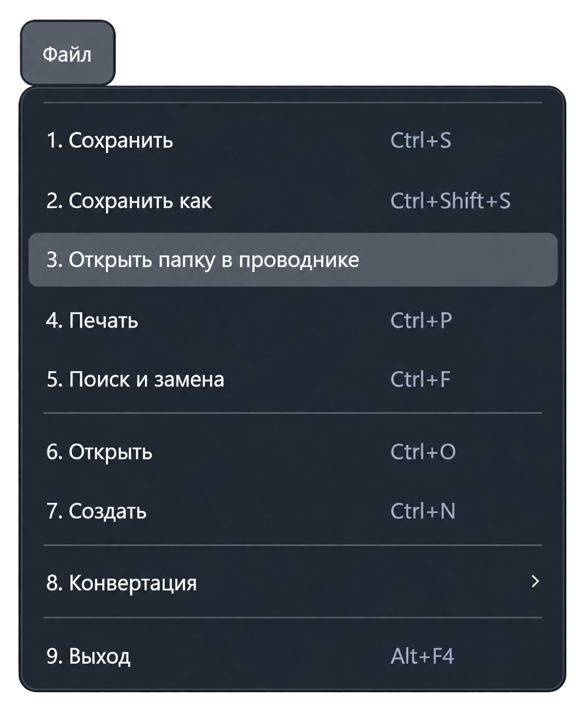

Функция «Открыть папку в проводнике»
Команда «Файл → Открыть папку в проводнике» открывает расположение файла активного документа в проводнике Windows.

Как воспользоваться
- Переключитесь на нужный документ в текстовом редакторе.
- Откройте меню «Файл» и выберите «Открыть папку в проводнике».
- Если файл существует, проводник откроет его папку и выделит файл.
Если папка не открылась
- Документ ещё не сохранён. У него нет пути на диске. Сначала выполните «Сохранить как».
- Файл удалён или перемещён. Если прежняя папка существует, приложение откроет её без выделения файла.
- Папка недоступна. Проверьте подключение диска или доступность указанного расположения.
Команда открывает проводник, но не сохраняет документ. Несохранённые изменения остаются в редакторе.